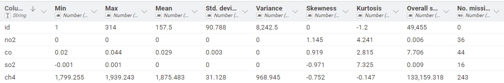
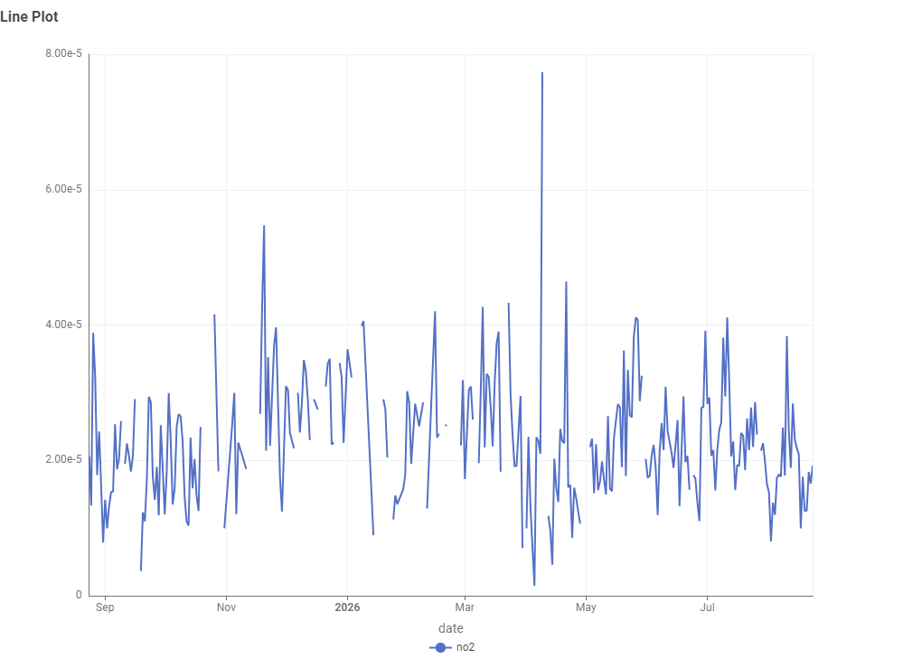
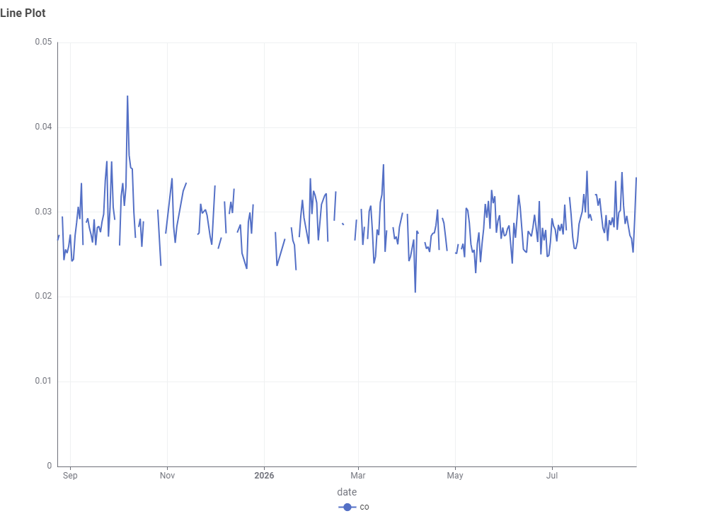
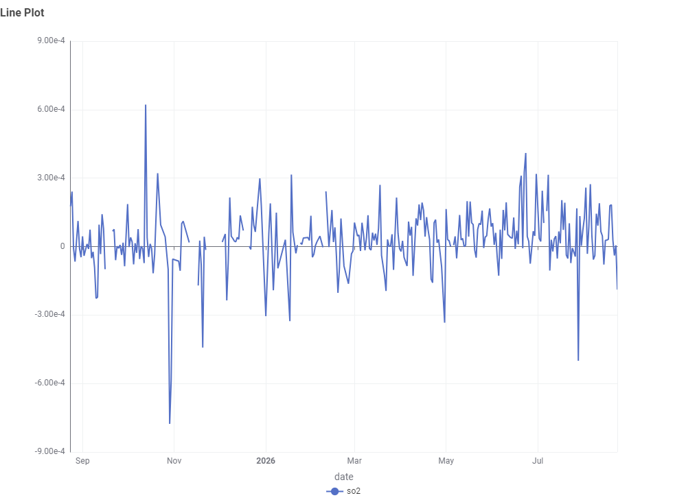
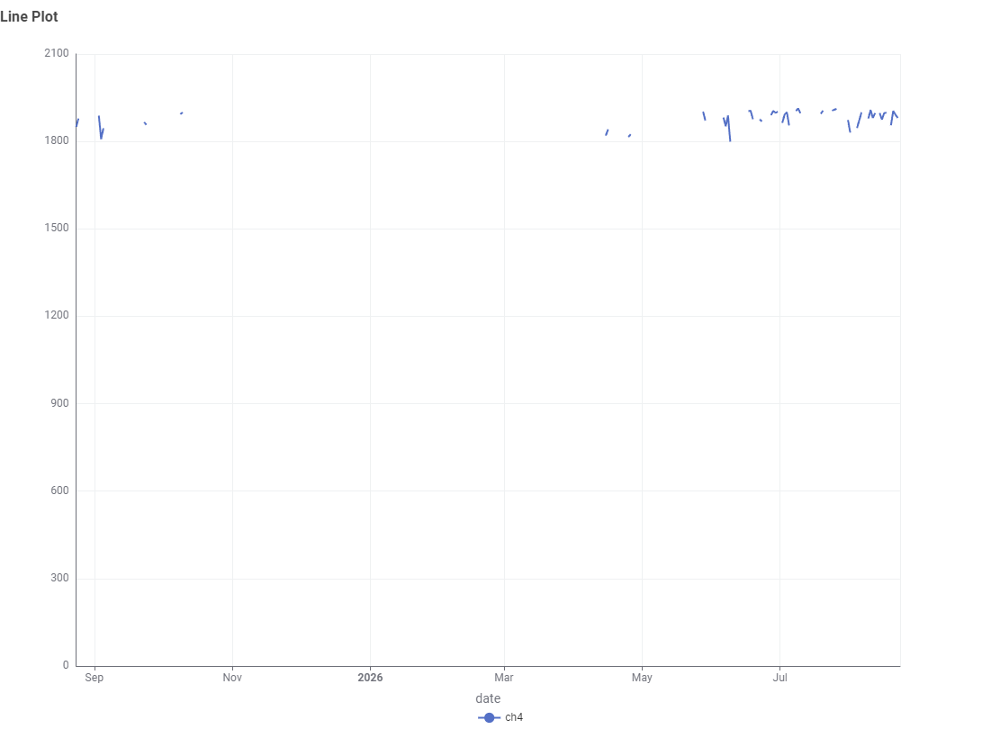
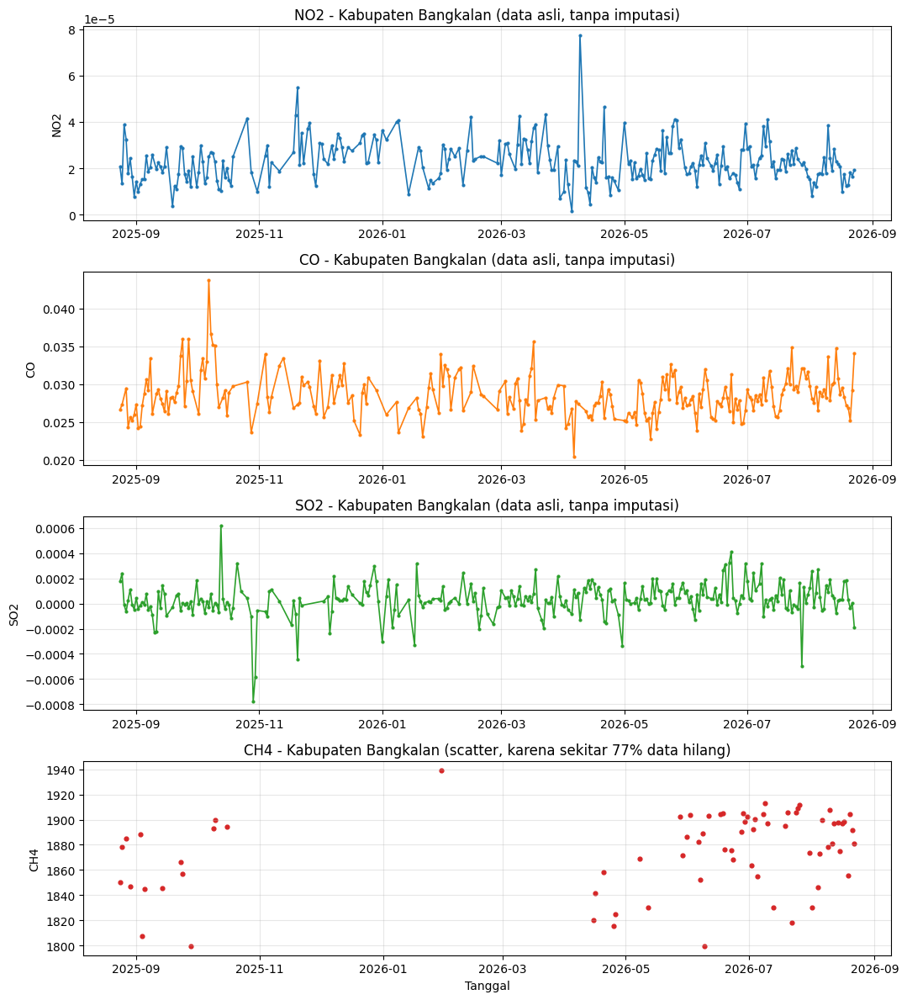
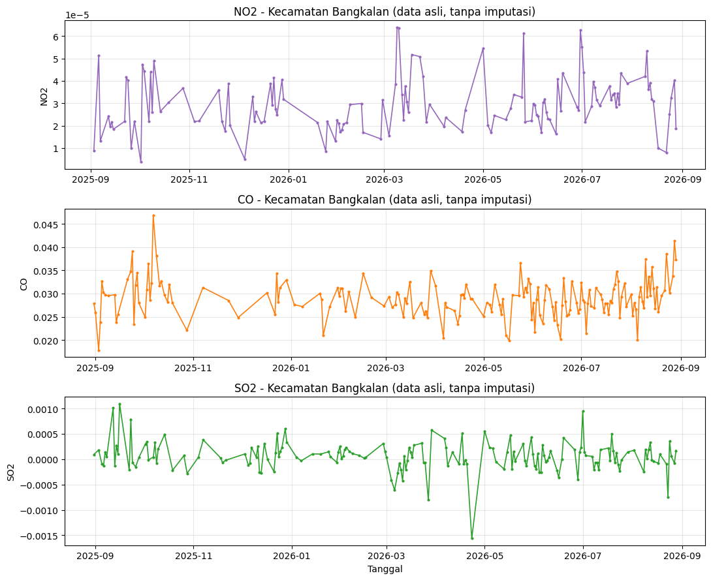

Data Understanding - Kabupaten Bangkalan#
Data Understanding adalah tahap untuk mengenali sumber data, cakupan wilayah dan waktu, cara memperoleh data, struktur data, serta melakukan profil awal (statistik deskriptif) terhadap data yang akan dipakai pada analisis kualitas udara Kabupaten Bangkalan. Dokumen ini juga mencakup tahap preprocessing dan ekstraksi fitur yang ditambahkan pada Tugas 3 (Bagian 11-13).
1. Sumber Data#
Item |
Keterangan |
|---|---|
Sumber |
Copernicus Data Space Ecosystem |
Layanan |
openEO |
Server |
|
Produk / Koleksi |
Sentinel-5P L2 ( |
Instrumen |
TROPOMI (TROPOspheric Monitoring Instrument) |
Polutan |
NO2, CO, SO2, CH4 |
Periode |
24 Agustus 2025 sampai dengan 24 Agustus 2026 |
Lokasi |
Kabupaten Bangkalan, Jawa Timur |
Sentinel-5P adalah satelit milik European Space Agency (ESA) yang membawa instrumen TROPOMI, dirancang khusus untuk memantau komposisi atmosfer Bumi, termasuk gas rumah kaca dan polutan udara. Satelit ini memiliki waktu kunjung ulang (revisit time) sekitar satu hari untuk cakupan global, sehingga cocok dipakai untuk analisis deret waktu harian.
1.1 Resolusi Spasial per Polutan#
Perlu dicatat bahwa resolusi spasial data TROPOMI berbeda untuk tiap polutan, sehingga tingkat kedetailan spasial yang diperoleh juga berbeda.
Polutan |
Resolusi Spasial (perkiraan) |
|---|---|
NO2 |
sekitar 5.5 km x 3.5 km |
SO2 |
sekitar 5.5 km x 3.5 km |
CO |
sekitar 7 km x 7 km |
CH4 |
sekitar 7 km x 7 km |
Karena luas Kabupaten Bangkalan hanya sekitar 1.260 km persegi, setiap piksel Sentinel-5P dapat mencakup area yang cukup luas relatif terhadap ukuran kabupaten. Oleh karena itu, agregasi spasial (dijelaskan pada bagian 4) digunakan untuk merangkum seluruh piksel yang berada di dalam wilayah Bangkalan menjadi satu nilai representatif per hari.
2. Koneksi dan Otentikasi#
Koneksi ke server openEO dilakukan menggunakan akun Copernicus Data Space Ecosystem, melalui metode device code flow.
import openeo
connection = openeo.connect("openeo.dataspace.copernicus.eu")
connection = connection.authenticate_oidc()
Saat kode di atas dijalankan, klien akan menampilkan tautan login beserta kode singkat di layar. Setelah login berhasil dilakukan melalui browser, koneksi akan terautentikasi secara otomatis untuk seluruh permintaan data berikutnya.
Perlu dicatat bahwa backend Sentinel Hub untuk koleksi SENTINEL_5P_L2
hanya mengizinkan satu band, yaitu satu polutan, pada setiap proses
permintaan data. Oleh karena itu, proses ekstraksi harus dilakukan secara
terpisah untuk NO2, CO, SO2, dan CH4, bukan sekaligus dalam satu
permintaan.
3. Area of Interest (AOI) Kabupaten Bangkalan#
AOI didefinisikan sebagai batas administratif asli Kabupaten Bangkalan
(bentuk polygon sesuai wilayah sebenarnya), bukan kotak bounding box.
Polygon ini diambil dari data batas administratif resmi (GADM level 2,
kode wilayah BPS/Kemendagri 3526), lalu disederhanakan agar tidak terlalu
berat saat dikirim sebagai parameter permintaan ke openEO, namun tetap
mengikuti lekukan pesisir dan bentuk asli kabupaten, tersimpan sebagai
../data/bangkalan-boundary.geojson.
import json
with open("../data/bangkalan-boundary.geojson", encoding="utf-8") as f:
bangkalan_geojson = json.load(f)
bangkalan_polygon = bangkalan_geojson["geometry"] # objek Polygon GeoJSON
Bounding box (west, south, east, north) tetap dihitung, tetapi
hanya dipakai sebagai batas kasar pada parameter spatial_extent di
load_collection, sekadar mempersempit area unduhan data mentah. Batas
yang sesungguhnya dipakai untuk agregasi spasial pada aggregate_spatial
adalah polygon administratif di atas, bukan kotak ini.
lons = [pt[0] for pt in bangkalan_polygon["coordinates"][0]]
lats = [pt[1] for pt in bangkalan_polygon["coordinates"][0]]
bangkalan_bbox = {
"west": min(lons),
"east": max(lons),
"south": min(lats),
"north": max(lats),
}
4. Proses Ekstraksi Data#
Untuk setiap polutan, data dimuat, diagregasi secara temporal (harian, mean), lalu diagregasi secara spasial (mean di dalam polygon AOI asli Bangkalan).
s5 = connection.load_collection(
"SENTINEL_5P_L2",
temporal_extent=["2025-08-24", "2025-11-24"], # satu bagian 3 bulan
spatial_extent=bangkalan_bbox,
bands=["NO2"], # ganti sesuai polutan: NO2, CO, SO2, atau CH4
)
s5 = s5.aggregate_temporal_period(reducer="mean", period="day")
s5 = s5.aggregate_spatial(reducer="mean", geometries=bangkalan_polygon)
job = s5.save_result(format="netCDF").create_job(title="NO2 Bangkalan bagian 1")
job.start_and_wait()
Catatan penting: permintaan data untuk rentang waktu 12 bulan
sekaligus dalam satu job ternyata tidak stabil pada backend openEO
Copernicus Data Space, sehingga sebagian hasil bisa kembali sebagai nilai
kosong meskipun status job menyatakan sukses. Oleh karena itu, rentang
waktu 24 Agustus 2025 sampai 24 Agustus 2026 dipecah menjadi 4 bagian
per 3 bulan, masing masing dijalankan sebagai job terpisah, lalu hasilnya
digabungkan kembali menjadi satu deret waktu utuh per polutan. Detail
lengkap kode ekstraksi, pemecahan rentang waktu, dan penggabungan hasil
tersedia pada notebook 1-ekstraksi-data.ipynb.
5. Struktur Data Hasil#
Seluruh hasil ekstraksi (4 polutan x 4 bagian waktu) digabungkan menjadi satu tabel tunggal, mirip struktur tabel pada basis data, dengan satu baris per tanggal dan satu kolom per polutan.
Kolom |
Tipe Data |
Keterangan |
|---|---|---|
|
datetime |
Tanggal pengukuran (harian) |
|
float |
Nilai konsentrasi rata rata harian NO2 pada wilayah Bangkalan |
|
float |
Nilai konsentrasi rata rata harian CO pada wilayah Bangkalan |
|
float |
Nilai konsentrasi rata rata harian SO2 pada wilayah Bangkalan |
|
float |
Nilai konsentrasi rata rata harian CH4 pada wilayah Bangkalan |
Contoh isi file data_polutan_bangkalan.csv:
date |
NO2 |
CO |
SO2 |
CH4 |
|---|---|---|---|---|
2025-08-24 |
0.000021 |
0.021 |
0.0004 |
0.00019 |
2025-08-25 |
0.000013 |
0.020 |
0.0003 |
0.00018 |
… |
… |
… |
… |
… |
Hanya ada satu file CSV yang dihasilkan, yaitu data_polutan_bangkalan.csv.
File NetCDF mentah per polutan per bagian waktu tetap disimpan di folder
../data/nc/ sebagai data mentah untuk keperluan pelacakan (traceability)
atau pemeriksaan ulang.
6. Keterbatasan Data#
Beberapa keterbatasan yang perlu disadari sejak tahap ini:
Resolusi spasial relatif kasar dibanding luas Kabupaten Bangkalan, sehingga nilai yang diperoleh merupakan rata rata area yang cukup luas, bukan potret polusi pada titik tertentu.
Kemungkinan data kosong pada hari tertentu, terutama akibat tutupan awan yang menghalangi pengukuran instrumen berbasis optik.
Nilai dapat berupa estimasi kolom atmosfer, bukan konsentrasi permukaan tanah secara langsung, sehingga interpretasinya perlu berhati hati saat dikaitkan dengan dampak kesehatan langsung pada manusia di permukaan.
Keterbatasan backend untuk rentang waktu panjang, sebagaimana dijelaskan pada Bagian 4, yang diatasi dengan memecah permintaan menjadi beberapa bagian.
7. Statistik Deskriptif Data (KNIME)#
Sesuai arahan tugas terbaru, profil statistik data dilakukan menggunakan KNIME Analytics Platform, dengan data yang sudah disimpan pada basis data PostgreSQL. Alur kerja (workflow) yang digunakan terdiri atas empat node berikut.
Urutan |
Node |
Fungsi |
|---|---|---|
1 |
PostgreSQL Connector |
Membuka koneksi ke basis data PostgreSQL tempat tabel |
2 |
DB Table Selector |
Memilih tabel |
3 |
DB Reader |
Mengeksekusi query dan menarik seluruh baris tabel ke dalam KNIME sebagai data tabular. |
4 |
Statistics |
Menghitung statistik deskriptif (jumlah data, rata rata, standar deviasi, nilai minimum, nilai maksimum, kuartil, dan jumlah nilai hilang) untuk setiap kolom numerik ( |
Hasil dari node Statistics kurang lebih berbentuk tabel berikut (nilai aktual mengikuti hasil eksekusi workflow, tabel di bawah adalah struktur/contoh format):
Kolom |
Jumlah Data |
Rata rata |
Std. Deviasi |
Minimum |
Maksimum |
Jumlah Missing |
|---|---|---|---|---|---|---|
NO2 |
… |
2.302440840087907E-5 |
9.095765772494764E-6 |
1.4641619685562546E-6 |
7.737131090834737E-5 |
36 |
CO |
… |
0.02854252029334975 |
0.0028298056860232863 |
0.0204873513430356 |
0.0437335954543123 |
44 |
SO2 |
… |
3.0178378533436094E-5 |
1.3511354212947474E-4 |
-7.769338553771377E-4 |
6.219266880569714E-4 |
16 |
CH4 |
… |
1875.483347360375 |
31.127873701991152 |
1799.2550048828125 |
1939.2427571614585 |
243 |

8. Visualisasi Time Series#
Selain statistik deskriptif, workflow KNIME perlu dilengkapi satu node tambahan untuk memvisualisasikan data sebagai deret waktu, karena node Statistics hanya menghasilkan angka ringkasan, bukan grafik.
Node tambahan yang disarankan: hubungkan output node DB Reader ke node Line Plot (tersedia di kategori Views pada KNIME), dengan konfigurasi:
Sumbu X: kolom
dateSumbu Y: kolom
NO2,CO,SO2, danCH4(dapat dipisah menjadi empat node Line Plot, satu per polutan, agar skala sumbu Y tidak saling mengganggu karena rentang nilai tiap polutan berbeda cukup jauh)
Grafik deret waktu ini menampilkan naik turunnya konsentrasi tiap polutan sepanjang periode 24 Agustus 2025 sampai 24 Agustus 2026, dan menjadi bahan visual utama pada bagian Data Understanding untuk melihat pola awal sebelum data diproses lebih lanjut pada tugas berikutnya.
Line Plot NO2:

Line Plot CO:

Line PLot SO2:

Line Plot CH4:

8.1 Visualisasi Tambahan Menggunakan Library Python#
Selain Line Plot dari KNIME di atas, deret waktu yang sama juga divisualisasikan menggunakan library Python (matplotlib) sebagai pembanding sekaligus alternatif yang dapat dijalankan langsung di dalam Jupyter Book ini.

Dari grafik di atas terlihat NO2, CO, dan SO2 punya cakupan data yang relatif baik (masing masing sekitar 85-95% hari terisi), sementara CH4 paling banyak kehilangan data (hanya sekitar 23% hari yang punya pengukuran), sehingga pola musimannya belum bisa disimpulkan dengan yakin dari data mentah ini saja.
9. Catatan Jika Hasil Ekstraksi Bernilai 0#
Jika seluruh nilai pada tabel hasil ekstraksi terlihat bernilai 0, hal ini umumnya bukan berarti udara benar benar bersih sempurna, melainkan menandakan salah satu dari beberapa kemungkinan berikut.
Nama band yang diminta tidak sesuai dengan nama band pada koleksi
SENTINEL_5P_L2(bersifat case sensitive).Nilai kosong (NaN) akibat tutupan awan tidak sengaja terisi 0 pada suatu tahap pemrosesan, alih alih dibiarkan sebagai data hilang.
Nilai konsentrasi memang sangat kecil (orde 1e-4 hingga 1e-6), sehingga terlihat seperti 0.000000 jika dicetak dengan pembulatan yang terlalu sedikit angka desimal.
Kesalahan pada kode pembacaan NetCDF yang salah memilih kolom (misalnya ikut membaca kolom indeks fitur alih alih kolom nilai polutan).
Notebook 1-ekstraksi-data.ipynb menyediakan sel uji coba dan diagnostik
khusus untuk memeriksa kemungkinan kemungkinan ini sebelum menjalankan
ekstraksi penuh setahun.
10. Perluasan pada Tugas 3: AOI Kecamatan dan Rentang Waktu Baru#
Tugas 3 mempersempit cakupan wilayah dari Kabupaten Bangkalan menjadi Kecamatan Bangkalan saja (kecamatan tempat ibu kota kabupaten berada), mengikuti arahan bahwa setiap mahasiswa menganalisis kecamatan masing masing. Beberapa penyesuaian yang dilakukan:
Aspek |
Tugas Sebelumnya |
Tugas 3 |
|---|---|---|
Cakupan wilayah |
Kabupaten Bangkalan (~2.078 km2) |
Kecamatan Bangkalan (~35 km2) |
Rentang waktu |
24 Agustus 2025 - 24 Agustus 2026 |
31 Agustus 2025 - 31 Agustus 2026 |
Polutan |
NO2, CO, SO2, CH4 |
NO2 saja |
Sumber polygon |
GADM level 2, kode 3526 |
GADM level 3, kode 3526110 |
Polygon Kecamatan Bangkalan disimpan sebagai
../data/kecamatan-bangkalan-boundary.geojson, dengan cara pemuatan yang
sama seperti polygon kabupaten sebelumnya (Bagian 3). Karena luas
wilayahnya jauh lebih kecil, jumlah tile citra satelit yang perlu diambil
per hari juga jauh berkurang, sehingga risiko rate limit dari backend
openEO (dibahas pada Bagian 9) menjadi jauh lebih rendah. Detail lengkap
kode ekstraksi tersedia pada notebook 1-ekstraksi-data-kecamatan.ipynb,
dengan keluaran berupa file NO2-Bangkalan.csv.
10.1 Statistik Deskriptif dan Visualisasi Data Kecamatan#
Berbeda dari file kabupaten yang memiliki satu baris untuk setiap
tanggal kalender (dengan NaN pada hari tanpa data), file per polutan di
tingkat kecamatan (NO2-Bangkalan.csv, CO-Bangkalan.csv,
SO2-Bangkalan.csv) hanya berisi baris untuk hari hari yang benar benar
punya pengukuran. Dari rentang 31 Agustus 2025 sampai 31 Agustus 2026
(~365 hari kalender), cakupan data tiap polutan berbeda beda.
Statistik |
NO2 |
CO |
SO2 |
|---|---|---|---|
Jumlah data tersedia |
132 hari (~36%) |
178 hari (~49%) |
168 hari (~46%) |
Rata rata |
2.95e-05 |
2.89e-02 |
5.90e-05 |
Standar deviasi |
1.22e-05 |
4.11e-03 |
2.97e-04 |
Minimum |
3.71e-06 |
1.78e-02 |
-1.56e-03 |
Kuartil 1 (Q1) |
2.17e-05 |
2.66e-02 |
-8.03e-05 |
Median |
2.80e-05 |
2.87e-02 |
5.27e-05 |
Kuartil 3 (Q3) |
3.72e-05 |
3.12e-02 |
1.95e-04 |
Maksimum |
6.40e-05 |
4.68e-02 |
1.10e-03 |
Catatan: nilai SO2 memiliki minimum negatif (-1.56e-03). Ini bukan kesalahan; nilai negatif kecil pada retrieval TROPOMI adalah representasi noise statistik di sekitar konsentrasi yang sangat rendah/mendekati nol, sebagaimana sudah dibahas pada Bagian 9.

Rata rata NO2 di Kecamatan Bangkalan (2.95e-05) sedikit lebih tinggi dibanding rata rata NO2 pada data kabupaten (2.30e-05), yang masuk akal mengingat Kecamatan Bangkalan adalah pusat kota dengan kepadatan transportasi lebih tinggi dibanding rata rata seluruh kabupaten yang juga mencakup area pedesaan dan pesisir. Cakupan data CO (~49%) dan SO2 (~46%) di tingkat kecamatan sedikit lebih baik dibanding NO2 (~36%), kemungkinan karena band CO dan SO2 pada TROPOMI menggunakan kanal pengukuran yang berbeda dan tidak selalu terpengaruh tutupan awan pada hari yang sama.
11. Preprocessing Sebelum Ekstraksi Fitur#
Sebelum data diubah menjadi fitur numerik, dua langkah preprocessing
dilakukan pada notebook 2-preprocessing-ekstraksi-fitur.ipynb.
11.1 Deteksi Outlier (Metode IQR)#
Outlier dideteksi menggunakan Interquartile Range (IQR): nilai NO2
yang berada di luar rentang [Q1 - 1.5 x IQR, Q3 + 1.5 x IQR] ditandai
sebagai outlier, lalu diperlakukan sebagai data hilang (bukan dihapus
barisnya, supaya deret waktu tetap utuh).
11.2 Imputasi Missing Value#
Nilai hilang, baik dari data asli maupun hasil penandaan outlier,
diisi dengan interpolasi berbasis waktu (interpolate(method="time")),
dilanjutkan ffill dan bfill sebagai fallback untuk nilai di ujung
awal/akhir deret waktu, sehingga seluruh data terisi tanpa NaN tersisa.
Sebelum lanjut ke ekstraksi fitur, dilakukan pengecekan ulang untuk
memastikan tidak ada outlier maupun missing value yang tersisa.
12. Ekstraksi Fitur dengan TSFEL#
Setelah data bersih, deret waktu tiap polutan (NO2, CO, SO2) diubah
menjadi 68 fitur numerik menggunakan pustaka TSFEL (Time Series
Feature Extraction Library). Setiap fitur dihitung sebagai satu nilai
skalar dari keseluruhan deret waktu satu tahun (frekuensi sampel fs=1,
karena data harian).
TSFEL secara resmi mengelompokkan fiturnya ke dalam empat domain:
Domain |
Jumlah Fitur pada Tugas Ini |
Contoh |
|---|---|---|
Statistical |
21 |
|
Temporal |
15 |
|
Spectral |
26 |
|
Fractal |
6 |
|
Domain fractal adalah domain resmi ke-4 pada TSFEL (dapat diverifikasi
dari tsfel/feature_extraction/features.json), berisi fitur yang
mengukur kompleksitas/kekasaran sinyal pada domain waktu. Jika format
laporan tugas hanya meminta tiga kelompok (statistical, temporal,
spectral), fitur fraktal dapat digabungkan ke dalam kelompok temporal.
Hasil ekstraksi fitur untuk setiap polutan disimpan dalam dua format:
<POLUTAN>_Bangkalan_TSFEL_fixed.csv (satu baris, 68 kolom) dan
<POLUTAN>_Bangkalan_TSFEL_fixed_long.csv (satu baris per fitur, dengan
kolom domain).
Perbaikan dibanding hasil sebelumnya. Versi ekstraksi NO2 yang pertama sempat menghasilkan 5 dari 6 fitur domain fractal bernilai NaN, karena sinyal sumber hanya memiliki 132 titik data (tidak di-reindex ke kalender harian penuh terlebih dahulu). Setelah kode preprocessing diperbaiki (sinyal direindex menjadi deret harian penuh sebelum diekstraksi, lalu divalidasi ketat agar tidak ada NaN maupun infinity yang lolos), ketiga hasil ekstraksi fitur NO2, CO, dan SO2 di bawah ini bersih sepenuhnya, tanpa nilai NaN atau infinity satupun dari total 68 kolom x 3 polutan.
12.1 Hasil Ekstraksi Fitur (Nilai Sebenarnya)#
Berikut adalah 68 nilai fitur hasil ekstraksi TSFEL yang sebenarnya untuk ketiga polutan, dikelompokkan per domain.
Domain Statistical (21 fitur)#
Fitur |
NO2 |
CO |
SO2 |
|---|---|---|---|
|
3.1153e-07 |
3.0239e-01 |
1.5579e-05 |
|
8.5351e-10 |
8.2846e-04 |
4.2683e-08 |
|
5.5028e-05 |
3.8157e-02 |
5.9679e-04 |
|
2.7418e-05 |
2.8573e-02 |
8.1484e-05 |
|
2.6608e-05 |
2.8533e-02 |
7.0115e-05 |
|
3.7077e-06 |
1.9896e-02 |
-4.2687e-04 |
|
9.9719e-06 |
3.1255e-03 |
1.8954e-04 |
|
9.9439e-11 |
9.7688e-06 |
3.5926e-08 |
|
1.5027e-02 |
1.5027e-02 |
1.5027e-02 |
|
2.7339e-05 |
2.8487e-02 |
7.9814e-05 |
|
1.8250e+02 |
1.8250e+02 |
1.8250e+02 |
|
3.4946e+04 |
1.4102e+02 |
2.0010e+03 |
|
9.9487e-01 |
9.9847e-01 |
9.9743e-01 |
|
2.1670e-05 |
2.8114e-02 |
3.3775e-05 |
|
1.2708e-05 |
3.6200e-03 |
2.3912e-04 |
|
-8.7423e-02 |
6.5126e-01 |
5.9092e-02 |
|
7.9974e-06 |
2.3782e-03 |
1.4844e-04 |
|
6.3828e-06 |
1.8234e-03 |
1.1931e-04 |
|
5.1321e-05 |
1.8261e-02 |
1.0237e-03 |
|
2.9175e-05 |
2.8744e-02 |
2.0632e-04 |
|
3.2699e-01 |
1.0996e-01 |
1.6134e-01 |
Domain Temporal (15 fitur)#
Fitur |
NO2 |
CO |
SO2 |
|---|---|---|---|
|
1.0021e-02 |
1.0425e+01 |
5.4242e-02 |
|
5.0000e+00 |
3.0000e+00 |
3.0000e+00 |
|
1.9805e+02 |
1.8345e+02 |
1.9387e+02 |
|
3.6500e+02 |
3.6500e+02 |
3.6500e+02 |
|
1.6667e-01 |
1.8033e-01 |
1.8306e-01 |
|
3.6990e-06 |
1.7980e-03 |
1.0063e-04 |
|
2.7059e-08 |
2.5731e-05 |
2.1083e-07 |
|
1.6664e-06 |
1.0255e-03 |
4.9536e-05 |
|
-2.6757e-07 |
-1.7481e-04 |
-8.7368e-07 |
|
4.0000e+01 |
5.6000e+01 |
4.7000e+01 |
|
1.2000e+01 |
1.4000e+01 |
1.4000e+01 |
|
4.1000e+01 |
5.5000e+01 |
4.7000e+01 |
|
2.0744e-08 |
9.8393e-07 |
9.2166e-08 |
|
1.3501e-03 |
6.5627e-01 |
3.6730e-02 |
|
0.0000e+00 |
0.0000e+00 |
7.2000e+01 |
Domain Spectral (26 fitur)#
Fitur |
NO2 |
CO |
SO2 |
|---|---|---|---|
|
2.7322e-03 |
5.4645e-03 |
2.7322e-03 |
|
0.0000e+00 |
0.0000e+00 |
0.0000e+00 |
|
7.1768e-01 |
8.9272e-01 |
2.3108e-01 |
|
4.1803e-01 |
4.0164e-01 |
4.3989e-01 |
|
4.6122e+01 |
2.1141e+01 |
2.9707e+01 |
|
4.9180e-02 |
0.0000e+00 |
1.2842e-01 |
|
9.8578e+00 |
9.8952e+00 |
1.1183e+01 |
|
2.0492e-01 |
3.4699e-01 |
3.2514e-01 |
|
1.0911e-01 |
8.1028e-02 |
1.6401e-01 |
|
-2.3222e+00 |
-7.1711e+00 |
-2.8043e-01 |
|
-1.7808e+00 |
-1.1740e+03 |
-1.7227e+01 |
|
7.4686e-01 |
8.1424e-01 |
8.1290e-01 |
|
3.4414e+00 |
4.5666e+00 |
2.3031e+00 |
|
5.8000e+01 |
5.8000e+01 |
6.0000e+01 |
|
4.1803e-01 |
4.0164e-01 |
4.3989e-01 |
|
0.0000e+00 |
0.0000e+00 |
0.0000e+00 |
|
1.2600e+00 |
1.6491e+00 |
7.1860e-01 |
|
-3.6356e-02 |
-4.3603e-02 |
-2.2190e-02 |
|
1.3653e-01 |
1.3158e-01 |
1.4224e-01 |
|
5.7845e-01 |
7.7009e-01 |
2.3106e-01 |
|
1.5970e-10 |
1.6339e-05 |
7.1466e-08 |
|
1.2455e-06 |
1.7384e-03 |
2.6456e-06 |
|
1.7291e-05 |
8.3620e-03 |
3.4296e-04 |
|
2.1031e+00 |
2.1236e+00 |
2.1401e+00 |
|
1.7240e-05 |
8.1580e-03 |
3.4295e-04 |
|
3.3572e-10 |
7.5944e-05 |
1.2876e-07 |
Domain Fractal (6 fitur)#
Fitur |
NO2 |
CO |
SO2 |
|---|---|---|---|
|
1.1055e+00 |
1.1428e+00 |
1.0538e+00 |
|
1.7610e+00 |
1.9087e+00 |
1.8801e+00 |
|
8.9310e-01 |
8.0622e-01 |
8.1910e-01 |
|
-2.7037e+00 |
-2.3290e-02 |
-1.2567e+00 |
|
1.2209e+00 |
1.1759e+00 |
1.1216e+00 |
|
1.0149e+00 |
1.0200e+00 |
1.0170e+00 |
12.2 Deskripsi dan Cara Menghitung Setiap Fitur#
Tabel berikut menjelaskan makna dan cara perhitungan (secara konsep, bukan kode) untuk setiap dari 68 fitur, dikelompokkan per domain, diringkas dari dokumentasi resmi TSFEL.
Domain Statistical#
Fitur |
Deskripsi |
Cara Menghitung |
|---|---|---|
|
Energi absolut sinyal |
Menjumlahkan kuadrat setiap nilai sinyal: sum(x_i^2) |
|
Daya rata-rata sinyal |
abs_energy dibagi jumlah sampel: sum(x_i^2) / N |
|
Nilai maksimum |
max(x) |
|
Nilai rata-rata |
mean(x) |
|
Nilai tengah (median) |
Mengurutkan data, mengambil nilai tengah |
|
Nilai minimum |
min(x) |
|
Standar deviasi |
Akar dari variansi: sqrt(var(x)) |
|
Variansi |
Rata-rata kuadrat selisih terhadap mean |
|
Nilai fungsi distribusi kumulatif empiris (ECDF) sepanjang waktu |
Untuk tiap titik, hitung proporsi data yang nilainya <= titik tersebut |
|
Nilai sinyal pada persentil tertentu ECDF |
Urutkan data, ambil nilai pada posisi persentil (default 0.2 dan 0.8) |
|
Jumlah kumulatif sampel di bawah nilai persentil tertentu |
Hitung banyak sampel yang <= nilai pada persentil tersebut |
|
Kemiringan ECDF antara dua persentil |
(nilai_persentil_akhir - nilai_persentil_awal) / (persentil_akhir - persentil_awal) |
|
Entropi Shannon sinyal |
Buat histogram (distribusi probabilitas nilai), hitung -sum(p * log(p)) |
|
Modus dari histogram sinyal |
Buat histogram, ambil nilai bin dengan frekuensi tertinggi |
|
Rentang interkuartil |
Q3 - Q1 |
|
Keruncingan distribusi |
Momen ke-4 dinormalisasi terhadap standar deviasi |
|
Rata-rata deviasi absolut dari mean |
mean(|x_i - mean(x)|) |
|
Median deviasi absolut dari median |
median(|x_i - median(x)|) |
|
Jarak puncak ke puncak |
max(x) - min(x) |
|
Root mean square |
sqrt(mean(x_i^2)) |
|
Kemencengan (asimetri) distribusi |
Momen ke-3 dinormalisasi terhadap standar deviasi |
Domain Temporal#
Fitur |
Deskripsi |
Cara Menghitung |
|---|---|---|
|
Luas di bawah kurva sinyal |
Dihitung dengan aturan trapesium (trapezoidal rule) terhadap sumbu waktu |
|
Lag pertama saat autokorelasi turun melewati 1/e |
Hitung fungsi autokorelasi (ACF), cari lag pertama yang melewati ambang 1/e |
|
Titik pusat sinyal pada sumbu waktu |
Rata-rata waktu, dibobot oleh amplitudo sinyal pada tiap waktu |
|
Jarak tempuh sinyal |
Jumlah panjang garis antar titik berurutan: sum(sqrt(1 + (x_i+1 - x_i)^2)) |
|
Indeks kompleksitas Lempel-Ziv (dinormalisasi) |
Ubah sinyal jadi biner (di atas/bawah median), hitung jumlah pola/frasa unik via algoritma LZ76 (Kaspar-Schuster), lalu bagi dengan panjang sinyal. Pembahasan lengkap beserta contoh perhitungan manual ada pada Bagian 12.5 |
|
Rata-rata selisih absolut antar titik berurutan |
mean(|x_i+1 - x_i|) |
|
Rata-rata selisih antar titik berurutan |
mean(x_i+1 - x_i) |
|
Median selisih absolut antar titik |
median(|x_i+1 - x_i|) |
|
Median selisih antar titik |
median(x_i+1 - x_i) |
|
Jumlah titik balik negatif (puncak lokal) |
Hitung berapa kali kemiringan berubah dari naik ke turun |
|
Jumlah puncak pada lingkungan tetangga tertentu |
Hitung titik yang lebih tinggi dari sejumlah tetangga di kiri dan kanannya |
|
Jumlah titik balik positif (lembah lokal) |
Hitung berapa kali kemiringan berubah dari turun ke naik |
|
Kemiringan tren keseluruhan |
Koefisien regresi linear sinyal terhadap waktu |
|
Jumlah total selisih absolut antar titik |
sum(|x_i+1 - x_i|) |
|
Jumlah persilangan nol (zero-crossing count) |
Hitung berapa kali dua nilai berurutan berbeda tanda (positif <-> negatif). Hasilnya berupa jumlah kejadian (bilangan bulat), bukan nilai yang dinormalisasi terhadap panjang sinyal — perhatikan nilai asli |
Domain Spectral#
Fitur |
Deskripsi |
Cara Menghitung |
|---|---|---|
|
Frekuensi dominan sinyal |
Transformasi Fourier (FFT), ambil frekuensi dengan magnitudo terbesar (di luar komponen DC) |
|
Rasio energi pada rentang 0.6-2.5 Hz terhadap energi total |
Dihitung dari power spectrum; rentang ini lazim dipakai untuk sinyal fisiologis manusia |
|
Koefisien cepstral prediksi linear |
Hitung koefisien Linear Predictive Coding (LPC), lalu transformasikan ke cepstrum |
|
Frekuensi tertinggi dengan energi signifikan |
Frekuensi di mana energi kumulatif spektrum mencapai ambang tertentu |
|
Nilai puncak kerapatan spektrum daya |
Nilai maksimum Power Spectral Density (PSD) hasil FFT |
|
Frekuensi median |
Frekuensi di mana energi kumulatif spektrum mencapai 50% |
|
Koefisien cepstral Mel |
Proyeksikan spektrum ke skala Mel, ambil logaritma, lalu transformasi kosinus diskrit (DCT) |
|
Lebar pita spektrum daya |
Selisih frekuensi antara batas atas dan bawah energi signifikan |
|
Titik pusat (barycenter) spektrum |
Rata-rata frekuensi, dibobot oleh magnitudo spektrum |
|
Laju penurunan amplitudo spektrum |
Mengukur seberapa cepat energi menurun terhadap indeks frekuensi |
|
Jarak spektral |
Selisih kumulatif antara bentuk spektrum sinyal dengan garis linear referensinya |
|
Entropi distribusi energi spektrum |
Entropi Shannon dihitung dari distribusi energi hasil FFT |
|
Keruncingan distribusi energi spektrum |
Momen ke-4 dari distribusi energi spektrum di sekitar rata-ratanya |
|
Jumlah titik balik positif pada magnitudo FFT |
Sama seperti |
|
Frekuensi tempat 95% energi sinyal berada di bawahnya |
Dihitung dari energi kumulatif spektrum |
|
Frekuensi tempat 5% energi sinyal berada di bawahnya |
Dihitung dari energi kumulatif spektrum |
|
Asimetri distribusi energi spektrum |
Momen ke-3 dari distribusi energi spektrum di sekitar rata-ratanya |
|
Kemiringan spektral |
Regresi linear amplitudo spektrum terhadap frekuensi |
|
Sebaran spektrum di sekitar rata-ratanya |
Variansi frekuensi, dibobot oleh magnitudo spektrum |
|
Tingkat perubahan spektrum antar waktu |
Korelasi antara spektrum daya pada dua segmen waktu berurutan |
|
Rata-rata nilai tiap pita frekuensi pada spectrogram |
Rata-rata sepanjang waktu untuk tiap bin frekuensi hasil Short-Time Fourier Transform (STFT) |
|
Rata-rata nilai absolut koefisien wavelet tiap skala |
Dihitung dari hasil dekomposisi Continuous Wavelet Transform (CWT) |
|
Energi koefisien wavelet tiap skala |
Jumlah kuadrat koefisien CWT pada tiap skala |
|
Entropi distribusi energi antar skala wavelet |
Entropi Shannon dihitung dari distribusi energi antar skala CWT |
|
Standar deviasi koefisien wavelet tiap skala |
Dihitung dari hasil dekomposisi CWT |
|
Variansi koefisien wavelet tiap skala |
Dihitung dari hasil dekomposisi CWT |
Domain Fractal#
Fitur |
Deskripsi |
Cara Menghitung |
|---|---|---|
|
Detrended Fluctuation Analysis, mengukur korelasi jangka panjang |
Bagi sinyal jadi beberapa segmen, hilangkan tren lokal tiap segmen, hitung fluktuasi rata-rata pada berbagai ukuran segmen |
|
Dimensi fraktal metode Higuchi |
Hitung panjang kurva sinyal pada berbagai skala interval waktu, ambil kemiringan hubungan log(panjang) vs log(skala) |
|
Eksponen Hurst, mengukur sifat persisten/anti-persisten sinyal |
Analisis Rescaled Range (R/S) pada berbagai ukuran jendela waktu |
|
Panjang fraktal maksimum |
Rata-rata panjang kurva pada skala terkecil dari perhitungan dimensi fraktal Higuchi |
|
Multiscale Entropy, entropi pada berbagai skala waktu |
Hitung sample entropy pada sinyal yang di-downsampling ke beberapa skala waktu berbeda |
|
Dimensi fraktal metode Petrosian |
Dihitung dari jumlah perubahan tanda turunan sinyal dan panjang sinyal (estimasi cepat kompleksitas sinyal) |
12.3 Konsep Dasar Statistik dan Sinyal di Balik Fitur TSFEL#
Sebelum masuk ke contoh perhitungan manual pada Bagian 12.4 dan 12.5, bagian ini merangkum konsep dasar statistik dan pengolahan sinyal yang menjadi fondasi dari ke-68 fitur TSFEL. Notasi: sinyal \(x = (x_1, x_2, \dots, x_N)\) dengan \(N\) titik data (di proyek ini, \(N=366\) hari untuk NO2, CO, SO2 di Kecamatan Bangkalan).
a. Ukuran pemusatan (central tendency)
Mean (rata-rata): \(\bar{x} = \frac{1}{N}\sum_{i=1}^{N} x_i\) — titik keseimbangan data.
Median: nilai tengah setelah data diurutkan. Lebih tahan (robust) terhadap outlier dibanding mean, karena itu median dipakai sebagai ambang biner pada
lempel_ziv(Bagian 12.5).
b. Ukuran sebaran (dispersion)
Variansi: \(\mathrm{Var}(x) = \frac{1}{N}\sum (x_i - \bar{x})^2\) — rata-rata kuadrat jarak tiap titik terhadap mean.
Standar deviasi: \(\mathrm{std}(x) = \sqrt{\mathrm{Var}(x)}\) — akar dari variansi, satuannya sama dengan sinyal asli sehingga lebih mudah diinterpretasi.
Interquartile range (IQR): \(Q_3 - Q_1\), rentang 50% data di tengah — dipakai juga untuk deteksi outlier pada Bagian 11.1.
Mean/median absolute deviation: rata-rata atau median dari \(|x_i - \bar{x}|\) (atau \(|x_i - \text{median}|\)) — ukuran sebaran yang lebih tahan outlier dibanding standar deviasi.
c. Bentuk distribusi (shape)
Skewness (kemencengan): momen ke-3 dinormalisasi, \(\frac{1}{N}\sum (x_i-\bar{x})^3 / \mathrm{std}(x)^3\). Bernilai 0 jika distribusi simetris, positif jika ekor memanjang ke kanan (banyak nilai rendah, sesekali lonjakan tinggi — pola umum pada data konsentrasi polutan).
Kurtosis (keruncingan): momen ke-4 dinormalisasi, \(\frac{1}{N}\sum (x_i-\bar{x})^4 / \mathrm{std}(x)^4 - 3\) (bentuk excess kurtosis, dikurangi 3 agar distribusi normal bernilai 0). Nilai tinggi berarti distribusi punya ekor lebih “berat” (lebih rentan nilai ekstrem) dibanding distribusi normal.
Entropy (entropi Shannon): \(-\sum p_k \log_2 p_k\), di mana \(p_k\) adalah proporsi data yang jatuh ke bin histogram ke-\(k\). Mengukur seberapa “tersebar merata” nilai sinyal — entropi tinggi (mendekati \(\log_2(\text{jumlah bin})\)) berarti nilai sinyal tersebar rata di semua bin, entropi rendah berarti nilai terkonsentrasi di sedikit bin saja.
d. Perubahan antar-waktu (domain Temporal)
First difference: \(d_i = x_{i+1} - x_i\), selisih antar titik berurutan — dasar dari
mean_diff,mean_abs_diff,median_diff,sum_abs_diff, danslope.Zero-crossing: berapa kali tanda \(x_i\) berubah dari positif ke negatif atau sebaliknya — dibahas mendalam pada Bagian 12.5.
Titik balik (turning points): titik di mana kemiringan \(d_i\) berubah tanda — puncak lokal (
negative_turning, dari naik ke turun) atau lembah lokal (positive_turning, dari turun ke naik).Slope (kemiringan tren): koefisien \(\beta_1\) dari regresi linear sederhana \(x_i = \beta_0 + \beta_1 t_i + \varepsilon_i\), dihitung dengan \(\beta_1 = \frac{\sum (t_i-\bar{t})(x_i-\bar{x})}{\sum (t_i-\bar{t})^2}\) — arah dan kecepatan tren naik/turun konsentrasi polutan sepanjang periode.
Kompleksitas Lempel-Ziv: ukuran seberapa “acak” atau “mudah dikompresi” sebuah sinyal biner — dibahas mendalam pada Bagian 12.5.
e. Domain frekuensi (Spectral)
Setiap fitur spectral berangkat dari Transformasi Fourier Cepat
(Fast Fourier Transform/FFT), yang mengubah sinyal dari domain waktu
(\(x\) terhadap \(t\)) menjadi domain frekuensi (magnitudo terhadap
frekuensi \(f\)). Setelah itu, spektrum diperlakukan seperti “distribusi”
baru: spectral_centroid adalah mean-nya (dibobot magnitudo),
spectral_spread adalah variansinya, spectral_skewness/
spectral_kurtosis adalah bentuknya, dan spectral_entropy adalah
entropinya — persis analogi statistik pada domain waktu di atas, hanya
sumbunya diganti dari waktu menjadi frekuensi.
f. Kompleksitas dan Fraktal
Fitur domain fractal (hurst_exponent, dfa,
higuchi_fractal_dimension, dst.) mengukur apakah pola sinyal
cenderung acak murni (tidak ada struktur yang bisa diprediksi),
persisten (tren yang sedang naik cenderung terus naik), atau
anti-persisten (nilai cenderung “memantul balik” setelah naik/turun).
Konsepnya diadaptasi dari geometri fraktal, di mana pola yang sama
(mirip) muncul berulang pada skala waktu yang berbeda-beda.
12.4 Contoh Perhitungan Manual per Fitur (Domain Statistical dan Temporal)#
Untuk menunjukkan bahwa rumus pada Bagian 12.2 benar-benar bisa ditelusuri (bukan sekadar “kotak hitam” pustaka), bagian ini memakai satu sinyal ilustrasi berukuran kecil — bukan data NO2/CO/SO2 asli (yang berjumlah 366 titik dan sulit dihitung manual), melainkan 10 titik data buatan yang cukup untuk mendemonstrasikan setiap rumus secara lengkap. Alih-alih menuliskan hasil sebagai tabel statis, sel kode di bawah benar-benar menghitung setiap fitur memakai NumPy saat buku ini dijalankan/dibangun, sehingga angkanya bisa dipercaya dan dapat ditelusuri ulang langkah demi langkah.
import numpy as np
import pandas as pd
# Sinyal ilustrasi 10 hari (bukan data asli -- dibuat kecil agar
# setiap fitur bisa ditelusuri manual, sekaligus dihitung otomatis
# di sini agar tidak ada salah hitung).
t = np.arange(10)
x = np.array([2, -1, 3, -2, -3, 1, 4, -1, -2, 3], dtype=float)
pd.DataFrame({"t": t, "x": x}).set_index("t").T
| t | 0 | 1 | 2 | 3 | 4 | 5 | 6 | 7 | 8 | 9 |
|---|---|---|---|---|---|---|---|---|---|---|
| x | 2.0 | -1.0 | 3.0 | -2.0 | -3.0 | 1.0 | 4.0 | -1.0 | -2.0 | 3.0 |
Nilai-nilai dasar yang dipakai berulang kali pada fitur di bawah:
mean_x, median_x = x.mean(), np.median(x)
std_x, var_x = x.std(), x.var()
d = np.diff(x) # selisih berurutan x[i+1]-x[i]
print(f"N = {len(x)}")
print(f"mean(x) = {mean_x}")
print(f"median(x) = {median_x}")
print(f"var(x) = {var_x}")
print(f"std(x) = {std_x:.4f}")
print(f"d = diff(x) = {d}")
N = 10
mean(x) = 0.4
median(x) = 0.0
var(x) = 5.639999999999999
std(x) = 2.3749
d = diff(x) = [-3. 4. -5. -1. 4. 3. -5. -1. 5.]
Domain Statistical (21 fitur)#
q1, q3 = np.percentile(x, 25), np.percentile(x, 75)
p20, p80 = np.percentile(x, 20), np.percentile(x, 80)
# entropy & hist_mode: ilustratif memakai 5 bin histogram. Jumlah bin
# yang dipakai TSFEL secara internal mengikuti default pustaka -- lihat
# catatan di bawah tabel.
hist, edges = np.histogram(x, bins=5)
p_hist = hist / hist.sum()
p_nz = p_hist[p_hist > 0]
entropy_illustrative = -np.sum(p_nz * np.log2(p_nz))
mode_bin = np.argmax(hist)
hist_mode_illustrative = (edges[mode_bin] + edges[mode_bin + 1]) / 2
statistical_features = {
"abs_energy": np.sum(x ** 2),
"average_power": np.sum(x ** 2) / len(x),
"calc_max": x.max(),
"calc_mean": mean_x,
"calc_median": median_x,
"calc_min": x.min(),
"calc_std": std_x,
"calc_var": var_x,
"ecdf (proporsi x<=1)": np.mean(x <= 1),
"ecdf_percentile (p20)": p20,
"ecdf_percentile (p80)": p80,
"ecdf_percentile_count (<=p20)": int(np.sum(x <= p20)),
"ecdf_percentile_count (<=p80)": int(np.sum(x <= p80)),
"ecdf_slope": (p80 - p20) / (0.8 - 0.2),
"entropy (ilustratif, 5 bin)": entropy_illustrative,
"hist_mode (ilustratif, 5 bin)": hist_mode_illustrative,
"interq_range": q3 - q1,
"kurtosis": np.mean((x - mean_x) ** 4) / std_x ** 4 - 3,
"mean_abs_deviation": np.mean(np.abs(x - mean_x)),
"median_abs_deviation": np.median(np.abs(x - median_x)),
"pk_pk_distance": x.max() - x.min(),
"rms": np.sqrt(np.mean(x ** 2)),
"skewness": np.mean((x - mean_x) ** 3) / std_x ** 3,
}
df_stat = pd.DataFrame(statistical_features.items(), columns=["Fitur", "Hasil"])
df_stat["Hasil"] = df_stat["Hasil"].round(4)
df_stat
| Fitur | Hasil | |
|---|---|---|
| 0 | abs_energy | 58.0000 |
| 1 | average_power | 5.8000 |
| 2 | calc_max | 4.0000 |
| 3 | calc_mean | 0.4000 |
| 4 | calc_median | 0.0000 |
| 5 | calc_min | -3.0000 |
| 6 | calc_std | 2.3749 |
| 7 | calc_var | 5.6400 |
| 8 | ecdf (proporsi x<=1) | 0.6000 |
| 9 | ecdf_percentile (p20) | -2.0000 |
| 10 | ecdf_percentile (p80) | 3.0000 |
| 11 | ecdf_percentile_count (<=p20) | 3.0000 |
| 12 | ecdf_percentile_count (<=p80) | 9.0000 |
| 13 | ecdf_slope | 8.3333 |
| 14 | entropy (ilustratif, 5 bin) | 2.1710 |
| 15 | hist_mode (ilustratif, 5 bin) | -2.3000 |
| 16 | interq_range | 4.5000 |
| 17 | kurtosis | -1.5108 |
| 18 | mean_abs_deviation | 2.2000 |
| 19 | median_abs_deviation | 2.0000 |
| 20 | pk_pk_distance | 7.0000 |
| 21 | rms | 2.4083 |
| 22 | skewness | 0.1021 |
Catatan untuk
entropydanhist_mode: jumlah bin histogram yang dipakai TSFEL secara internal mengikuti parameter/default pustaka (tidak selalu 5 seperti pada sel kode di atas). Hasil di atas bersifat ilustratif untuk menunjukkan mekanismenya, bukan reproduksi persis parameter default TSFEL — untuk kecocokan persis, periksa parameternbinspada kode sumber TSFEL.
Domain Temporal (15 fitur)#
# auc: aturan trapesium
auc = np.trapezoid(x, t)
# autocorr: lag pertama saat ACF turun di bawah 1/e
def acf(signal, lag):
s = signal - signal.mean()
return np.sum(s[:len(s) - lag] * s[lag:]) / np.sum(s ** 2)
autocorr_lag = next(lag for lag in range(1, len(x)) if acf(x, lag) < 1 / np.e)
# calc_centroid: rata rata waktu dibobot |x|
calc_centroid = np.sum(t * np.abs(x)) / np.sum(np.abs(x))
# distance: jumlah panjang garis antar titik berurutan
distance = np.sum(np.sqrt(1 + d ** 2))
# turning points: berdasarkan pergantian tanda pada diff dari d
dsign = np.sign(d)
positive_turning = sum(1 for i in range(len(dsign) - 1) if dsign[i] < 0 and dsign[i + 1] > 0)
negative_turning = sum(1 for i in range(len(dsign) - 1) if dsign[i] > 0 and dsign[i + 1] < 0)
# neighbourhood_peaks (ilustratif, n=1 tetangga kiri-kanan)
def neighbourhood_peaks(signal, n=1):
return sum(
1
for i in range(n, len(signal) - n)
if all(signal[i] > signal[j] for j in range(i - n, i + n + 1) if j != i)
)
# slope: koefisien regresi linear x terhadap t
slope, intercept = np.polyfit(t, x, 1)
temporal_features = {
"auc": auc,
"autocorr (lag)": autocorr_lag,
"calc_centroid": calc_centroid,
"distance": distance,
"lempel_ziv": "lihat Bagian 12.5",
"mean_abs_diff": np.mean(np.abs(d)),
"mean_diff": d.mean(),
"median_abs_diff": np.median(np.abs(d)),
"median_diff": np.median(d),
"negative_turning": negative_turning,
"neighbourhood_peaks (ilustratif, n=1)": neighbourhood_peaks(x, 1),
"positive_turning": positive_turning,
"slope": slope,
"sum_abs_diff": np.sum(np.abs(d)),
"zero_cross": "lihat Bagian 12.5",
}
df_temporal = pd.DataFrame(temporal_features.items(), columns=["Fitur", "Hasil"])
df_temporal
| Fitur | Hasil | |
|---|---|---|
| 0 | auc | 1.5 |
| 1 | autocorr (lag) | 1 |
| 2 | calc_centroid | 4.727273 |
| 3 | distance | 32.696252 |
| 4 | lempel_ziv | lihat Bagian 12.5 |
| 5 | mean_abs_diff | 3.444444 |
| 6 | mean_diff | 0.111111 |
| 7 | median_abs_diff | 4.0 |
| 8 | median_diff | -1.0 |
| 9 | negative_turning | 2 |
| 10 | neighbourhood_peaks (ilustratif, n=1) | 2 |
| 11 | positive_turning | 3 |
| 12 | slope | 0.024242 |
| 13 | sum_abs_diff | 31.0 |
| 14 | zero_cross | lihat Bagian 12.5 |
Domain Spectral (26 fitur) dan Fractal (6 fitur) tidak dijabarkan titik demi titik di sini karena perhitungannya memerlukan transformasi (FFT, wavelet, regresi log-log pada berbagai skala jendela) yang jauh lebih rumit dibanding domain Statistical/Temporal yang murni operasi aritmatika sederhana. Sebagai ilustrasi singkat cara kerja
spectral_centroid(dijalankan langsung, bukan tabel statis):
x_demo = np.array([1, 0, -1, 0], dtype=float) # satu gelombang penuh, 4 titik
freqs = np.fft.rfftfreq(len(x_demo), d=1) # d=1 hari antar sampel
magnitude = np.abs(np.fft.rfft(x_demo))
spectral_centroid_demo = np.sum(freqs * magnitude) / np.sum(magnitude)
pd.DataFrame({"frekuensi (siklus/hari)": freqs, "magnitudo FFT": magnitude})
| frekuensi (siklus/hari) | magnitudo FFT | |
|---|---|---|
| 0 | 0.00 | 0.0 |
| 1 | 0.25 | 2.0 |
| 2 | 0.50 | 0.0 |
spectral_centroid pada sinyal 4 titik ini adalah rata-rata seluruh
frekuensi hasil FFT, dibobot oleh magnitudonya — persis seperti
menghitung “mean” pada Bagian 12.3, hanya sumbunya frekuensi, bukan
waktu. Rumus lengkap tiap fitur spectral/fractal tetap dijabarkan
secara konseptual pada Bagian 12.2.
12.5 Studi Kasus Mendalam: zero_cross dan lempel_ziv#
Dua fitur ini dibahas terpisah secara khusus karena definisi matematisnya sering disalahpahami (termasuk sempat salah ditulis pada draf awal Bagian 12.2 — sudah diperbaiki), dan karena keduanya adalah fitur yang membedakan “apakah sinyal pernah berganti tanda” dan “seberapa acak/kompleks pola sinyalnya” — dua sudut pandang yang saling melengkapi untuk memahami perilaku polutan.
12.5.1 zero_cross(signal)#
Definisi. zero_cross menghitung berapa kali dua nilai berurutan
pada sinyal berbeda tanda (dari positif ke negatif, atau sebaliknya).
Secara formal, untuk sinyal \(x = (x_1, \dots, x_N)\):
Hasilnya adalah bilangan bulat (jumlah kejadian), bukan proporsi/rasio — lihat perbaikan pada Bagian 12.2.
pairs = list(zip(x[:-1], x[1:]))
products = [a * b for a, b in pairs]
changed_sign = [p < 0 for p in products]
df_zc = pd.DataFrame({
"x_i": [a for a, _ in pairs],
"x_i+1": [b for _, b in pairs],
"x_i * x_i+1": products,
"berganti tanda?": changed_sign,
})
def manual_zero_cross(signal):
return int(np.sum(signal[:-1] * signal[1:] < 0))
print(f"zero_cross(x) = {manual_zero_cross(x)}")
df_zc
zero_cross(x) = 6
| x_i | x_i+1 | x_i * x_i+1 | berganti tanda? | |
|---|---|---|---|---|
| 0 | 2.0 | -1.0 | -2.0 | True |
| 1 | -1.0 | 3.0 | -3.0 | True |
| 2 | 3.0 | -2.0 | -6.0 | True |
| 3 | -2.0 | -3.0 | 6.0 | False |
| 4 | -3.0 | 1.0 | -3.0 | True |
| 5 | 1.0 | 4.0 | 4.0 | False |
| 6 | 4.0 | -1.0 | -4.0 | True |
| 7 | -1.0 | -2.0 | 2.0 | False |
| 8 | -2.0 | 3.0 | -6.0 | True |
Mengapa hasil ini konsisten dengan data asli Bangkalan (Bagian
12.1)? NO2 dan CO memiliki zero_cross = 0 karena keduanya adalah
konsentrasi gas yang secara fisik selalu bernilai positif sepanjang
366 hari (lihat calc_min NO2 \(= 3.7077\times10^{-6}\) dan CO \(=
1.9896\times10^{-2}\), keduanya di atas nol) — tidak pernah berganti
tanda, sehingga tidak pernah “menyeberangi nol”. Sebaliknya, SO2
memiliki calc_min negatif (\(-4.2687\times10^{-4}\)), sehingga sinyal
SO2 memang berayun melewati nol, dan tercatat berganti tanda sebanyak
72 kali sepanjang periode 366 hari — angka ini murni hasil
penjumlahan kejadian seperti pada tabel di atas, bukan hasil dibagi
oleh panjang sinyal (72/366 \(\approx\) 0.197, bukan itu yang dilaporkan
TSFEL).
12.5.2 lempel_ziv(signal, threshold=None)#
Definisi. lempel_ziv mengukur kompleksitas Lempel-Ziv (LZ76,
Kaspar & Schuster) dari sinyal, dengan tiga langkah: (1) binerisasi
sinyal terhadap threshold (default median), (2) penguraian
bertahap (incremental parsing) string biner menjadi frasa-frasa
yang belum pernah muncul sebelumnya sebagai bagian dari string yang
sudah dibaca, (3) normalisasi: jumlah frasa \(c(n)\) dibagi panjang
string \(n\).
def lz76_complexity(binary_string, verbose=True):
"""Algoritma penguraian bertahap LZ76 (Kaspar & Schuster, 1987),
dijalankan langsung -- bukan angka yang diketik manual -- supaya
tiap frasa yang ditemukan bisa dilacak persis."""
n = len(binary_string)
i, k, l = 0, 1, 1
c, k_max = 1, 1
# Frasa pertama (panjang 1) sudah otomatis terhitung lewat c=1 di atas,
# jadi harus dicatat secara eksplisit di sini agar tidak hilang dari daftar.
phrases = [binary_string[0:1]]
prev_l = 1
stop = False
while not stop:
if binary_string[i + k - 1] != binary_string[l + k - 1]:
k_max = max(k, k_max)
i += 1
if i == l:
c += 1
l += k_max
phrases.append(binary_string[prev_l:l])
prev_l = l
if l + 1 > n:
stop = True
else:
i, k, k_max = 0, 1, 1
else:
k = 1
else:
k += 1
if l + k > n:
c += 1
phrases.append(binary_string[prev_l:n])
stop = True
if verbose:
for idx, ph in enumerate(phrases, start=1):
print(f"frasa baru #{idx}: '{ph}'")
return c, phrases
median_x = np.median(x)
binary_signal = "".join("1" if v > median_x else "0" for v in x)
print(f"median(x) = {median_x}")
print(f"string biner = {binary_signal}\n")
c_n, phrases = lz76_complexity(binary_signal)
print(f"\njumlah frasa c(n) = {c_n}")
print(f"gabungan frasa = {''.join(phrases)} (cocok dengan string asli: {''.join(phrases) == binary_signal})")
def manual_lempel_ziv(signal, threshold=None):
threshold = np.median(signal) if threshold is None else threshold
b = "".join("1" if v > threshold else "0" for v in signal)
c, _ = lz76_complexity(b, verbose=False)
return c / len(b)
lz_value = manual_lempel_ziv(x)
print(f"\nlempel_ziv(x) = c(n)/n = {c_n}/{len(binary_signal)} = {lz_value}")
median(x) = 0.0
string biner = 1010011001
frasa baru #1: '1'
frasa baru #2: '0'
frasa baru #3: '100'
frasa baru #4: '11'
frasa baru #5: '001'
jumlah frasa c(n) = 5
gabungan frasa = 1010011001 (cocok dengan string asli: True)
lempel_ziv(x) = c(n)/n = 5/10 = 0.5
Penguraian bertahap di atas dijalankan langsung dari kode (bukan
ditelusuri di kepala), dan hasilnya menunjukkan frasa yang ditemukan
adalah 1 | 0 | 100 | 11 | 001 (\(c(n)=5\)) — perlu dicatat bahwa
sempat ada draf percobaan penguraian manual di kepala yang keliru
(memberi frasa 10 dan 011 alih-alih 100 dan 11); versi yang
benar adalah hasil dari sel kode di atas, karena algoritma LZ76 memakai
aturan pencocokan self-referential (posisi pencarian pencocokan bisa
kembali ke awal string, bukan hanya memperpanjang karakter berikutnya
secara berurutan) yang jauh lebih mudah salah jika ditelusuri di kepala
dibanding dijalankan sebagai kode.
Sebagai pembanding, nilai lempel_ziv pada data asli 366 hari berkisar
0.167-0.183 (Bagian 12.1) — jauh lebih kecil dari 0.5 pada contoh
ilustrasi 10 titik ini. Ini masuk akal: semakin panjang sinyal,
proporsi frasa baru terhadap total panjang cenderung menurun
(pola-pola pendek mulai berulang), sehingga nilai lempel_ziv yang
dinormalisasi terhadap sinyal 366 hari secara alami lebih rendah
dibanding sinyal ilustrasi 10 hari yang sangat pendek.
12.5.3 Verifikasi dengan TSFEL#
Sel kode berikut mencoba menjalankan tsfel.feature_extraction. features.zero_cross dan .lempel_ziv yang sesungguhnya pada sinyal
ilustrasi yang sama, lalu membandingkannya dengan fungsi manual pada
Bagian 12.5.1 dan 12.5.2 di atas. Kode ini dibungkus try/except agar
buku tetap bisa dibangun meski kernel yang dipakai untuk merender
Jupyter Book ini belum memasang tsfel — jika tsfel terpasang pada
lingkungan Anda (sesuai tech stack proyek ini), sel ini akan benar-benar
menjalankan pustaka aslinya dan menampilkan hasil pembandingannya di
sini.
try:
import tsfel
zc_tsfel = tsfel.feature_extraction.features.zero_cross(x)
lz_tsfel = tsfel.feature_extraction.features.lempel_ziv(x)
pd.DataFrame({
"Fitur": ["zero_cross", "lempel_ziv"],
"Manual": [manual_zero_cross(x), lz_value],
"TSFEL": [zc_tsfel, lz_tsfel],
"Cocok?": [
manual_zero_cross(x) == zc_tsfel,
np.isclose(lz_value, lz_tsfel),
],
})
except ImportError:
print(
"tsfel belum terpasang pada kernel yang dipakai untuk membangun "
"buku ini, sehingga perbandingan langsung tidak dapat ditampilkan "
"di sini. Jalankan sel ini pada notebook proyek (yang sudah "
"memasang tsfel sesuai tech stack) untuk melihat hasilnya."
)
Sebagai pelengkap, sel berikut membaca hasil ekstraksi fitur yang
sesungguhnya (file <POLUTAN>_Bangkalan_TSFEL_fixed_long.csv di
root proyek, hasil dari Bagian 12.1) dan menampilkan baris zero_cross
serta lempel_ziv untuk ketiga polutan secara langsung dari data,
sebagai pembanding akhir terhadap tabel statis pada Bagian 12.1:
files_long = {
"NO2": "../data/csv/NO2_Bangkalan_TSFEL_fixed_long.csv",
"CO": "../data/csv/CO_Bangkalan_TSFEL_fixed_long.csv",
"SO2": "../data/csv/SO2_Bangkalan_TSFEL_fixed_long.csv",
}
rows = []
for pollutant, path in files_long.items():
try:
df_long = pd.read_csv(path)
# nama kolom fitur diasumsikan "feature"; sesuaikan jika nama
# kolom pada file long Anda berbeda (mis. "Feature" atau index).
feature_col = "feature" if "feature" in df_long.columns else df_long.columns[0]
value_col = "value" if "value" in df_long.columns else df_long.columns[-1]
sub = df_long[df_long[feature_col].isin(["zero_cross", "lempel_ziv"])]
for _, r in sub.iterrows():
rows.append({"Polutan": pollutant, "Fitur": r[feature_col], "Nilai": r[value_col]})
except FileNotFoundError:
rows.append({"Polutan": pollutant, "Fitur": "(file tidak ditemukan)", "Nilai": path})
pd.DataFrame(rows)
13. Kesimpulan#
Data Sentinel-5P L2 yang diakses melalui openEO Copernicus Data Space
Ecosystem terbukti dapat diambil untuk wilayah dan rentang waktu yang
ditentukan, dengan catatan penting bahwa ekstraksi harus dilakukan per
polutan dan dipecah menjadi beberapa bagian waktu karena keterbatasan
backend. Area of Interest yang dipakai sudah mengikuti bentuk
administratif asli, baik pada level kabupaten (tugas sebelumnya) maupun
level kecamatan (Tugas 3), bukan kotak bounding box, sehingga agregasi
spasial lebih mencerminkan wilayah yang sesungguhnya. Struktur data
hasil ekstraksi berupa tabel dengan kolom date dan kolom polutan sudah
dirancang agar mudah dipakai pada tahap berikutnya, dan telah diprofilkan
lebih lanjut melalui statistik deskriptif dan visualisasi time series
menggunakan KNIME.
Pada Tugas 3, data NO2, CO, dan SO2 Kecamatan Bangkalan diproses lebih lanjut melalui deteksi outlier (IQR) dan imputasi missing value (dengan sinyal direindex ke kalender harian penuh terlebih dahulu), hingga bersih sepenuhnya, lalu diubah menjadi 68 fitur numerik per polutan menggunakan TSFEL yang mencakup domain statistical, temporal, spectral, dan fractal. Seluruh 68 x 3 = 204 nilai fitur pada hasil akhir bersih tanpa NaN maupun infinity (lihat Bagian 12.1), setelah perbaikan pada proses reindexing sinyal. Visualisasi time series dilakukan dengan dua cara yang saling melengkapi: Line Plot pada KNIME (Bagian 8) dan library Python matplotlib (Bagian 8.1 dan 10.1). Dengan cakupan ini, tahap Data Understanding beserta preprocessing dan ekstraksi fitur pada Tugas 3 dinyatakan selesai untuk ketiga polutan; pemodelan lebih lanjut memakai fitur fitur ini dikerjakan sebagai bagian dari tugas terpisah.
Sebagai pelengkap, Bagian 12.3-12.5 menambahkan konsep dasar statistik
dan sinyal yang mendasari ke-68 fitur TSFEL, contoh perhitungan manual
langkah demi langkah untuk seluruh fitur domain Statistical dan
Temporal memakai sinyal ilustrasi kecil, serta studi kasus mendalam
untuk dua fitur yang sebelumnya kurang terjelaskan, zero_cross dan
lempel_ziv, lengkap dengan perbaikan definisi zero_cross (bilangan
bulat, bukan rasio) dan kode verifikasi memakai TSFEL yang dapat
dijalankan langsung pada notebook proyek.